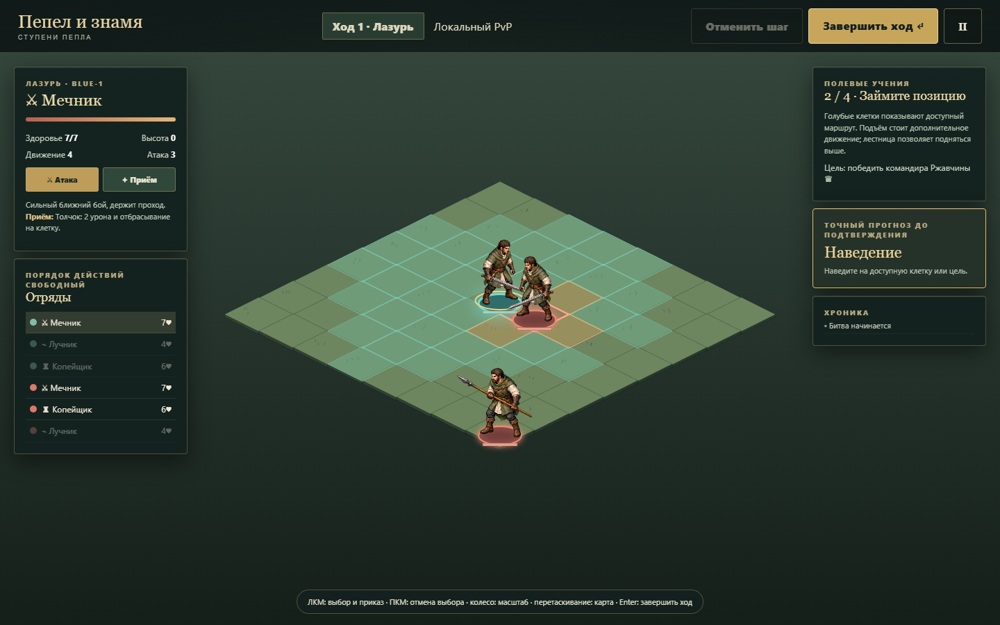
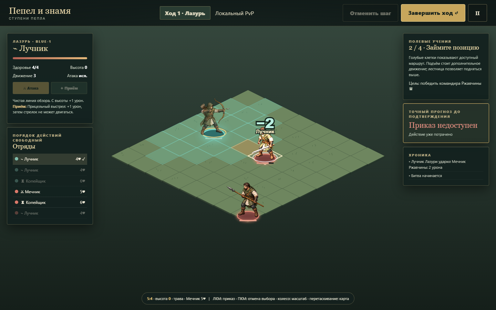
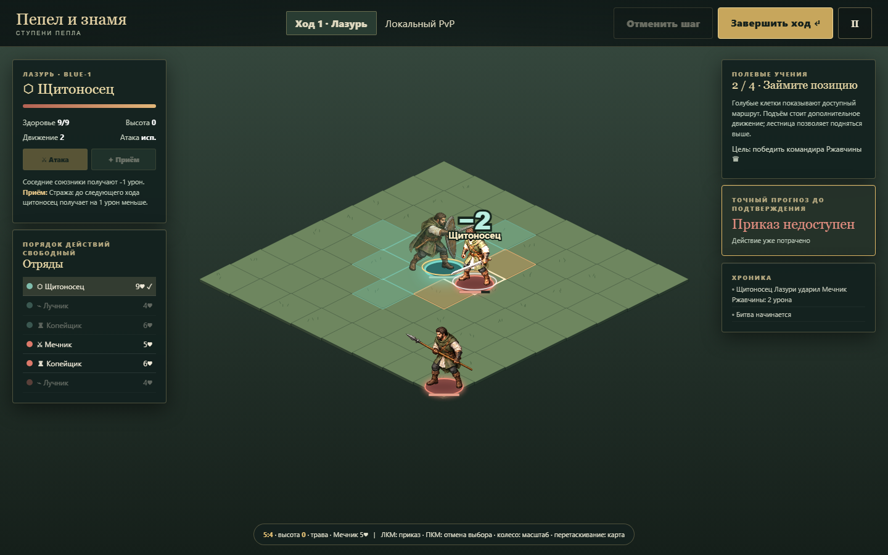
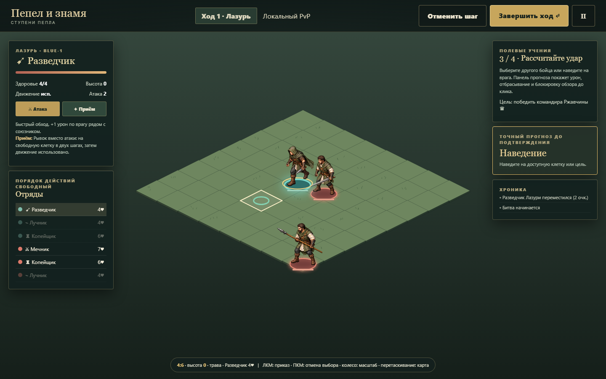
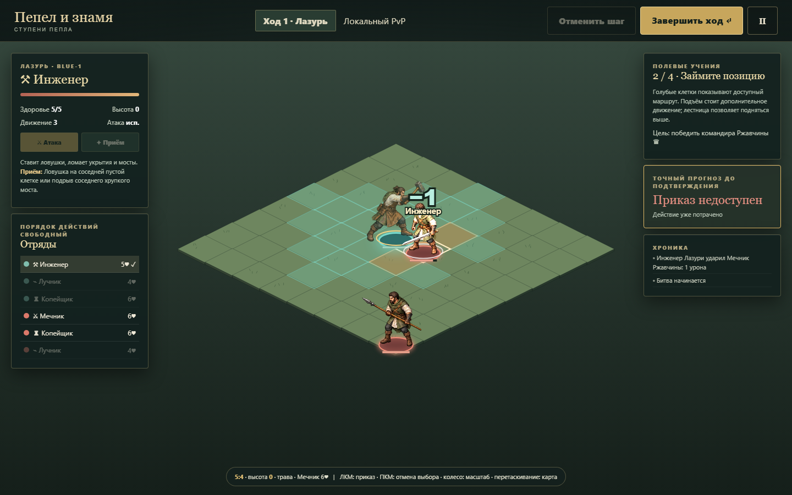
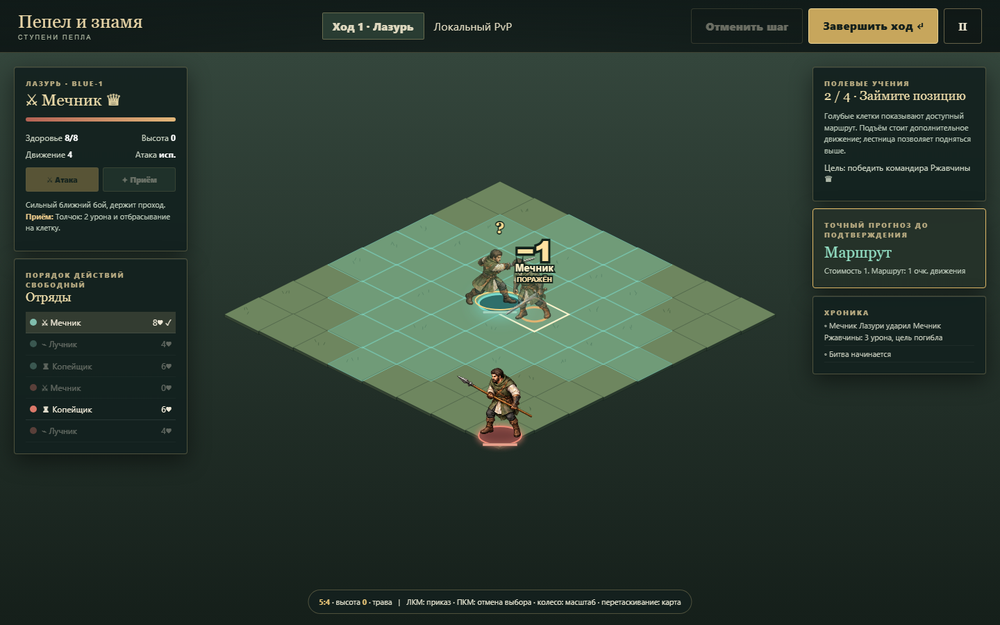

Итерация 5 · новое меню, мужские персонажи и RU / EN
128 тестов / 16 файлов9 UI-побед на английском30 сцен / 126 кадров диалоговНовая зимняя иллюстрация главного меню; язык перенесён внутрь угловых настроек. Переписаны диалоги, созданы мужские портреты Верена, Радомира и Тихона. Независимые критики проверили основные экраны на ПК 1440×900 / 1280×720 и планшетах 768×1024 / 1024×768, дополнительно телефон 390×844.

Оригинальная долина, сигнальная башня и отдельные настройки.

Портретная композиция сохраняет башню и читаемость.
Исправлены перехват Tab, клавиатурный выбор ответов, обрезание HUD, узкие сенсорные кнопки и смешение языков. Переключение RU → EN сохраняет точные сериализованные бой и диалог. Preview всех шести приёмов не меняет состояние до подтверждения.
Независимый ПК UX · Независимый планшетный UX · 30 сцен и сохранения · Визуальный критик меню · Критик драматургии · Полный английский путь · Таблица всех находок
Крупнейший оставшийся UX-вопрос: вторичные действия набора отряда далеко ниже первого экрана. Есть верхняя кнопка старта и рабочая прокрутка; уплотнение состава и пресетов запланировано. Физические планшеты пока не проверены.
Огни под пеплом · завершены итерации 2–4
10 карт · 9 заданий на путь2 маршрута и развязки117 тестов18 реальных UI-победПосле шести встреч с классами можно защитить караван или семенной запас. Затем — эвакуация свидетелей и финальная битва. Шесть рисованных персонажей, пять фонов, девять локальных музыкальных тем, отдельная громкость и подтверждаемый сброс кампании. Оба пути сыграны через настоящий интерфейс до финала, все команды совпадают с replay; ошибок страницы нет.
Весь план с отметками · Полный путь каравана · Полный путь хранилища · Независимая тактика · Визуал / первый UX · Integration / прогноз · 17 повторных кадров
| Задание | Раунды UI | Команды | Цель |
|---|---|---|---|
| Живые на дороге | 5 | 57 | Сопровождение |
| Цена весны | 4 | 49 | Оборона |
| Последний переход | 5 | 55 | Эвакуация |
| Право на огонь | 7 | 77 | Командир |
Независимый tactical critic завершил десять baseline и четыре normal-vs-normal матча. Все baseline выигрываются; в более сильных столкновениях оборона/финал проигрываются законно. 16 исследовательских побед/поражений · Изображения / аудио · Промпты
После критики исправлены: скрытый исход выхода от отбрасывания; сводка цели под мобильной прокруткой. Полный UI-проход выявил выбор низкой клетки за уступом: режим земли теперь учитывает ближайший центр. Оба пути повторно завершены после исправления. Таблица C-01–C-04.
Крупнейший оставшийся пробел проверки: фактическое время и понятность кампании живому новичку на физическом планшете, художественное прослушивание музыки. Touch Chromium и аудиоанализатор проверены. Точная следующая необязательная итерация.

Цена выбора пути

Настоящий бой сопровождения

Оборона хранилища

390 px · имена и прогресс видны

Развязка каравана · UI fixture критика

Развязка семян · UI fixture критика
Архив · сюжетная итерация 1
Шесть персонажей и первая законченная арка вокруг закрытой долины и зимнего зерна. Диалоги до и после каждого боя, журнал реплик, сохранение прерванной сцены, выбор сигнала у ворот и разные итоговые реплики. Две оригинальные иллюстрации imagegen, четыре локальных эмбиента, небольшие эффекты с отключением движения.
План с готовыми шагами · Браузерные проверки · Все шесть реальных боёв с диалогами · Независимая критика и повторная проверка · Промпты иллюстраций
88 тестов прошли; настоящая кампания завершена через UI за 3/5/3/4/4/4 раунда, каждый приказ совпал с replay. Критик нашёл перекрытие счётчика фаз панелью выбора; исправление проверено на четырёх размерах, 12/12. Следующий крупнейший шаг — альтернативные боевые маршруты и новые задачи; текущий выбор меняет историю, а цепочка боёв пока линейна.

Пролог у брода

Решение у ворот

Последняя печь

Сенсорная новелла

Отступление и повтор боя
Приёмы на планшете · 2026-10-03
После пользовательской проверки приём вынесен на постоянную панель: «Приём · Натиск», «Толчок / стража» и другие способности доступны без открытия отряда. Проверяются все шесть архетипов: прогноз не изменяет состояние, подтверждённый результат совпадает с движком. Отключено выделение текста меню, добавлен favicon со знаменем и угольком. Workflow исправлен для push в master; Source GitHub Actions нужно проверить в Settings → Pages.
Повторная проверка и ограничения · Последний прогон

Натиск на постоянной панели

Капкан без открытия отряда

Подготовка стражи
Планшет · сенсорное управление
Касание выбирает бойца или открывает прогноз; отдельная кнопка подтверждает приказ. Один палец перемещает камеру, два меняют масштаб. Экранные кнопки открывают отряд, выбирают землю за фигурой, включают атаку моста и все высоты. Подписи снаряжения раскрываются касанием.
Независимый сенсорный критик · Проверки и состояния · Воспроизводимый сценарий
82 теста правил прошли; 11 сенсорных браузерных сценариев прошли без ошибок страницы. Проверены 768×1024 и 1024×768, прогноз/подтверждение/отмена, стража, атака красной стороны PvP, блокировка на ходу ИИ, панорамирование, pinch, отмена жеста, поворот и пауза. Проверка выполнена в Chromium с нативными касаниями CDP; физические iPad/Safari и Android остаются следующей проверкой. Крупнейшая общая открытая задача — актуализировать баланс готовых составов.

Портретный планшет

Альбомный планшет

Прогноз до подтверждения

Hot-seat · атака красной стороны

Масштаб двумя пальцами

Удар по мосту без клавиатуры
Как играть · справочник и контратаки
В меню появился справочник: легенда цветов, высоты, приказы, способности шести классов, специализации, снаряжение, цели и клавиши. Оранжевая угроза атаки с текущего места врага отделена от урона земли с маркером −1/−2/−3. Натиск объяснён вместе с успешным толчком, остановкой следующего хода и исключениями.
Включена прежде недоступная стража мечника: приём по себе вместо атаки, −1 прямого урона и контратака 1, если выжил. ИИ имеет тот же приказ. Alt помогает выбирать землю за перекрывающим её спрайтом.
Независимая критика и исправления · Реальные проверки в браузере · Новые планы кампании
82 теста прошли. Все шесть глав завершены через UI с новой стражей: 3/5/3/4/4/4 раунда, ошибок страницы нет. После замечаний критика исправлены направление лестницы и имя кнопки в инструкции.

Легенда на 640 px

Подготовка стражи

Ответ 1 до клика

Фактическая контратака

Натиск и остановка
Пустая клетка под угрозой

Отдельная опасность земли
Независимый аудит и исправления · 2026-10-02
Все проблемы и статусы в defects.md · Исходный браузерный аудит · Независимый аудит правил · Повторная браузерная проверка · Повторная проверка правил и replay
Исправлены пропуск хода ИИ, зависание и продолжение боя в паузе, возврат из меню, остановка копейщика, обе специализации инженера, расход капкана при рывке и проверки отмены движения. Цель и прогноз доступны на узких экранах, следующий урок открывает брифинг. Сапёрский капкан показывает −3 и снимает 3 здоровья.
75 тестов правил24 независимые headless-пробы12 браузерных проверок6 завершённых глав через UI
Браузерные результаты · Результаты правил · Новая серия кампании · Полный Highland с сохранением и повтором
Крупнейшая открытая задача — заново измерить перекос пресетов на исправленных правилах и улучшить удержание точек. Gate теперь выигрывается normal blue за 6 раундов; hard попытка проиграна. Общий баланс этим не доказан.

640 px · цель и прогноз доступны

Брифинг следующей главы

Каменщик укрепил занятый мост

Сапёр · точный прогноз −3

Фактический урон и источник

ИИ остановлен в меню
Текущий срез
6 архетипов3 цели матчаPvE и hot-seatДетерминированный replayПеред матчем можно выбрать контроль точек, победу над командиром или уничтожение отряда. Урон появляется над пострадавшим бойцом. Крупнейший оставшийся недостаток — преимущество первого готового состава в проверенной серии 8 из 8 матчей.
Окружение · восемь спрайтов
Факел, жаровня, укрытие-валун, капкан, настил моста, знамя, обломки и ступени созданы встроенным imagegen. Спрайты подключены к реальным клеткам и меняются вместе с состоянием. Браузер проверяет 8 прозрачных PNG и 5 взаимодействий через интерфейс; урон и изменения совпадают с движком.
Промпты · Результаты браузера · Первая критика · Повторный критик
Исправления после критики: предметы поверх подсветки движения, янтарная опасность с точным −2/−1, контекстные высоты вместо плотной сетки чисел (H показывает все), красный отказ на недоступной воде. Следующий визуальный вопрос — ориентация лестниц и перекрытия объектов при разных масштабах.

Все восемь объектов в игре

Общий план

Высоты при удерживании H

Капкан поверх движения

Источник урона

Настил разрушен — вода

Укрытие превратилось в обломки

Бой у печей
Спрайтовые бойцы · imagegen
Все шесть классов используют оригинальный прозрачный атлас: стойка, два шага и удар. Добавлены разворот, вспышка попадания и затухание гибели. Браузер проверил движение и удары всех классов, alpha и совпадение результатов с правилами. Ошибок страницы нет.
Промпты · Результаты браузера · Первая критика · Повторная проверка · Финальный критик
Исправлены срезанные головы и чужие фрагменты, возникшие при нарезке по строгой сетке. Финальная независимая проверка подтвердила результат. Текущий визуальный недостаток — нет рисованной позы гибели; плавность двухкадрового шага требует видеопроверки.

Мечник · стойка

Лучник · выстрел
Копейщик · шаг

Щитоносец · удар

Разведчик · движение

Инженер · замах

Смертельное попадание
Кампания и источники урона · 2026-10-02
Шесть карт последовательно вводят мечника, лучника, копейщика, щитоносца, разведчика и инженера. Все шесть победных журналов пройдены через реальный интерфейс: 3, 3, 2, 6, 2 и 5 раундов. Проверены сохранение, открытие глав и подпись ловушки; ошибок страницы нет. Сборка и 54/54 теста проходят.
Независимый тактический отчёт · Визуальный/UX отчёт · Победный журнал ворот · Проверки подсказок
После критики исправлены описания стражи, рывка и ловушек; точки ворот требуют реального удержания даже после разгрома защитников. Числа высоты увеличены и получили тёмный фон поверх подсветки движения. Причины ловушки и костра остаются в хронике. Крупнейший новый недостаток: универсальный ИИ плохо планирует удержание двух точек в миссии ворот; проверенный план игрока выигрывает.

Шесть клятв

Лучник и высота

Удержание ворот

−2 · Ловушка

Инженер у печей

Завершённая кампания
Снимки после итерации масштаба

Главное меню

Обучение

Набор отряда

Большая карта

Выбор бойца и движение

Ответ ИИ

Пошаговый повтор

Точный прогноз обрушения моста

Мост после удара

Передача хода в hot-seat

Цель: победить всех бойцов

Число урона в повторе
Движение · последовательность реальных кадров

Прогноз маршрута

Начало шага

В движении

Конец шага
Замечания и исправления
- Первый визуальный критик: поле и бойцы были мелкими. Масштаб камеры и силуэты увеличены. Второй попросил усилить фигуры и цели; добавлены цветные основания, яркие и пронумерованные точки. Повторная проверка подтвердила улучшение.
- Первый запуск: кнопка старта была ниже экрана. Она добавлена в видимую шапку набора и проверена интеграционным критиком.
- Предыдущий тактический критик: центральная цель не оспаривалась на старой карте. Архивный replay.
- Новая независимая серия: 14 больших матчей и 2 учебных, сводка и повторы; главный текущий перекос — слабость второго пресета. Эксперимент из 26 матчей дал только частичное улучшение. Тактический критик сыграл два полных матча и обнаружил резкий сброс контрольной серии; правило теперь явно описано в интерфейсе.
Текущая проверка правил
Сравнение серии и накопительных очков: реконструировано 40 журналов. Смена подсчёта сама по себе не устраняет перевес первого пресета. Новые цели матча проверены детерминированными тестами и браузерными кадрами.
Проверки
npm run build · npm test · node scripts/browser-smoke.mjs · node scripts/objectives-browser.mjs
Снимки сделаны установленным Chromium при 1440×900. Smoke-проверка: ошибок страницы нет.